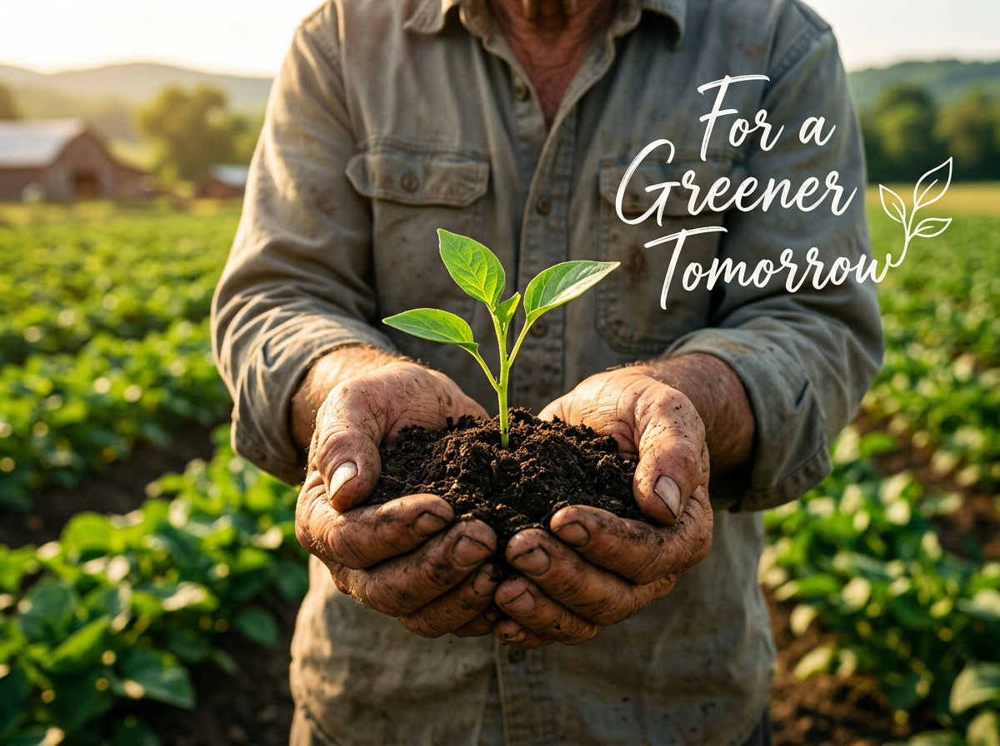

Healthy Crops, Brighter Tomorrows
Detect foliar plant diseases in seconds with deep learning computer vision. Protect your yields, receive verified organic & chemical remedies, and build a sustainable harvest for greener tomorrows.

Intelligent Agricultural Pathology
Engineered specifically for smallholder and commercial farmers navigating real field conditions across India.
Instant Foliar Detection
Upload a leaf image or take a real-time photo to isolate lesions, fungal rusts, and bacterial blights in under 2 seconds.
Dual Treatment Protocols
Balanced advisory providing organic/biological alternatives (neem oil, Trichoderma) alongside calibrated chemical fungicides.
Living Farm History
All scans and diagnoses are saved privately in your browser storage. Track disease progression across growing seasons without friction.
Field-First & Offline Ready
Zero heavy frameworks. Built in lightweight Vanilla HTML/CSS/JS optimized for low-bandwidth 2G/3G connectivity in remote areas.
Three Steps to Crop Protection
Accurate diagnostics in the palm of your hand without expensive equipment.
Capture Foliage
Snap a photo of the affected leaf in good natural light using your phone camera or select an image from your files.
AI Neural Scan
Our deep vision model scans the foliage, cross-references foliar symptom patterns, and computes risk probability.
Apply Remedies
Review the comprehensive diagnosis report, apply organic sprays or targeted fungicides, and save the report to your logbook.
“Healthy crops are born from attentive care and early detection. AI gives every farmer the diagnostic clarity to protect their harvest before disease takes hold.”
Ready to protect your fields today?
Diagnose crop stress early, prevent yield loss, and keep a clean health logbook.